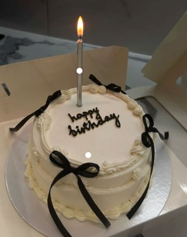
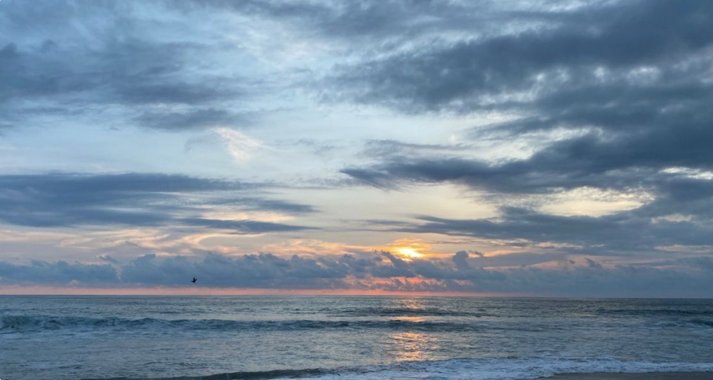
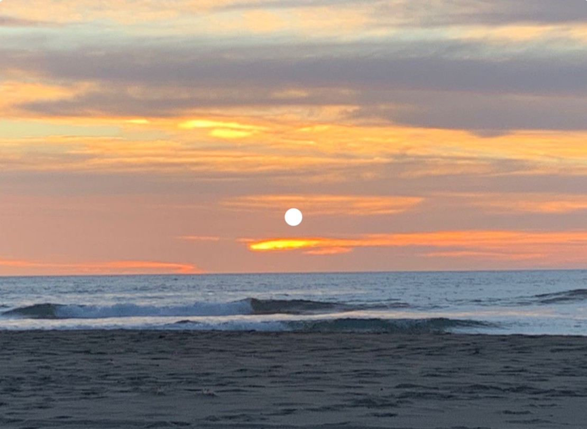
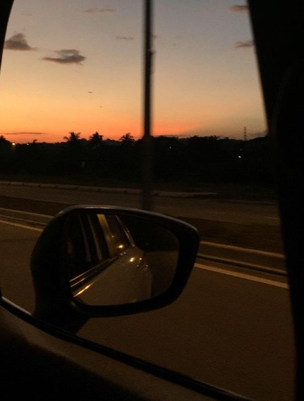

My Favourite Hobbies/Sports:
- Roller skating and Ice skating
- Taek-won-do
- Cooking
- Soccer and Volleyball
- Reading

|

|

|
||||
|
I am not the biggest fan of roller skating. I like to try and experience new things in life. Therefore, my friends and I deciced to try roller skating in a roller skating area near my house. I would say learning this sport takes time and patience. Its a fun sport and activity. |
I love ice skating. It hasn't been that long since I learned the sport, but its very fun and interesting. When I first tried on ice skates, I had trouble adjusting with it, increasing my interest in the sport. Overtime, I learned to walk, jump, and even run. When I got on the ice, I wanted to learn it. So far, this is my favourite hobby. |
Taek-won-do is a very aggressive sport. It helps you in real-life situations where you have to protect yourself (self-defense). I have learned Taek-won-do for 5 years now (black-belt martial artist). |
I have always been passionate for cooking. Any time I cook, I feel a sense of relaxation and accomplishment. Cooking puts me in a "flow state", where I'm fully immersed & enjoying the present. The feeling of creating something from scratch is incredibly rewarding. Cooking allows you to learn new techniques, expand your culinary range, and travel the world through different cuisines. |
I like playing/watching soccer with my family and friends. There is always a thrill of scoring a goal, the excitement of a game, and the overall experience of playing soccer is deeply satisfying. Soccer is a fun way to enjoy the oudoors, get healthy exercise with friends, and build lasting relationships. |
Volleyball is my favourite sport. I always play it with my friends. Every weekend, I play with my friends and their families in the park. It requires a wide range of athletic skills, including jumping, agility, quick reflexes, and hand-eye coordination. Volleyball can be played by individuals of all ages and skill levels, and can be played indoors or outdoors. |
I find reading as a mix of entertainment, learning, and mental stimulation. I find more interest in reading fictional/mystery books. Reading books helps reduce stress and calm the mind. Books can enhance reading comprehension and critical thinking skills - as readers analyze information and make connections. |
My Favourite Books To Read:
|
For those of you who are Hogwarts Fans, click on the cover! |

|
I also have a passion for photography. Whenever I go out, I take pictures on my Instax Square SQ1 Instant Camera or in my 4K DigitalCamera.
Here is a few photos that I took from my cameras:
|  | |||
|  |  |  |
My Favourite Songs/Song Artists:
Favourite songs:
Click on the artist to listen to the song
- Show Me Love - (WizTheMc & bees and honey)
- party 4 u - (Charli xcx)
- Revolving door - (Tate McRae)
- Follow You - (Noizy)
- Young And Beutiful - (Lana Del Rey)
Favourite Song Artists:
- The Weeknd
- PARTYNEXTDOOR
- Tate McRae
- Lana Del Rey